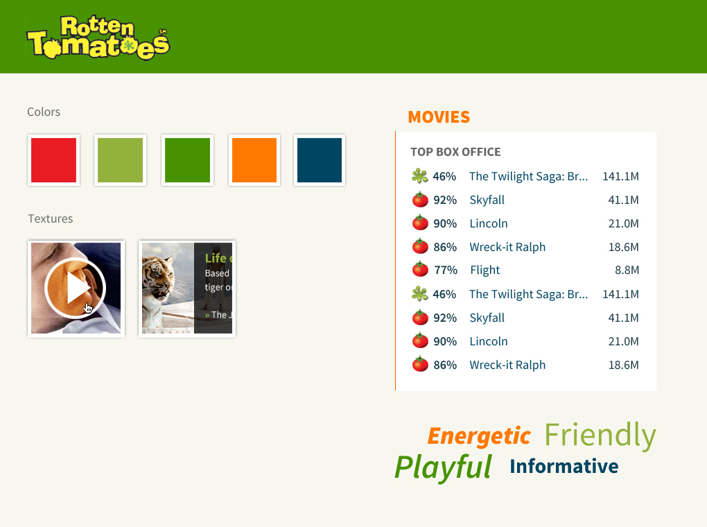
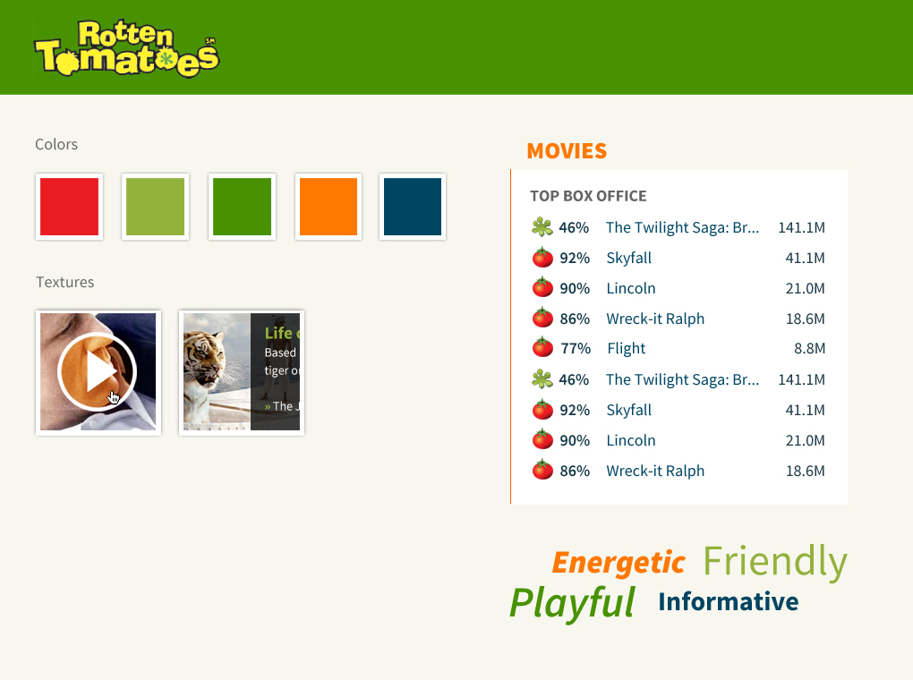

I visit Rotten Tomatoes a lot. In fact, I usually don't go see a movie unless I know the Tomatometer score. As much as I visit it, I do notice every single time that it is a really cluttered site that partially feels like a Final Fantasy fan site I made in the late 1990s.
So really quickly, I'll talk about my approach to this exercise.
These were the things I didn't like about Rotten Tomatoes: Cluttered frontpage, ugly Tomatometer, blue sky background, and the sloppy social media elements.
Then I thought about why I visit the site. I go to Rotten Tomatoes primarily for movie ratings, not even the reviews, just the number next to the tomato. Once I'm on the site, more often than not I'll click on one of the news stories or feature articles that catch my eye.
I make this assumption as I move forward with the design exercise: People want to see the ratings first, then the unique to RT articles, then movie media (photos, trailers).
I don't do a ground up redesign, instead I tried to enhance the parts that were already good, and improve the parts that were bothersome.
Wireframes, moodboard, and style tiles shown below.
 

{kind=link}
{kind=link}